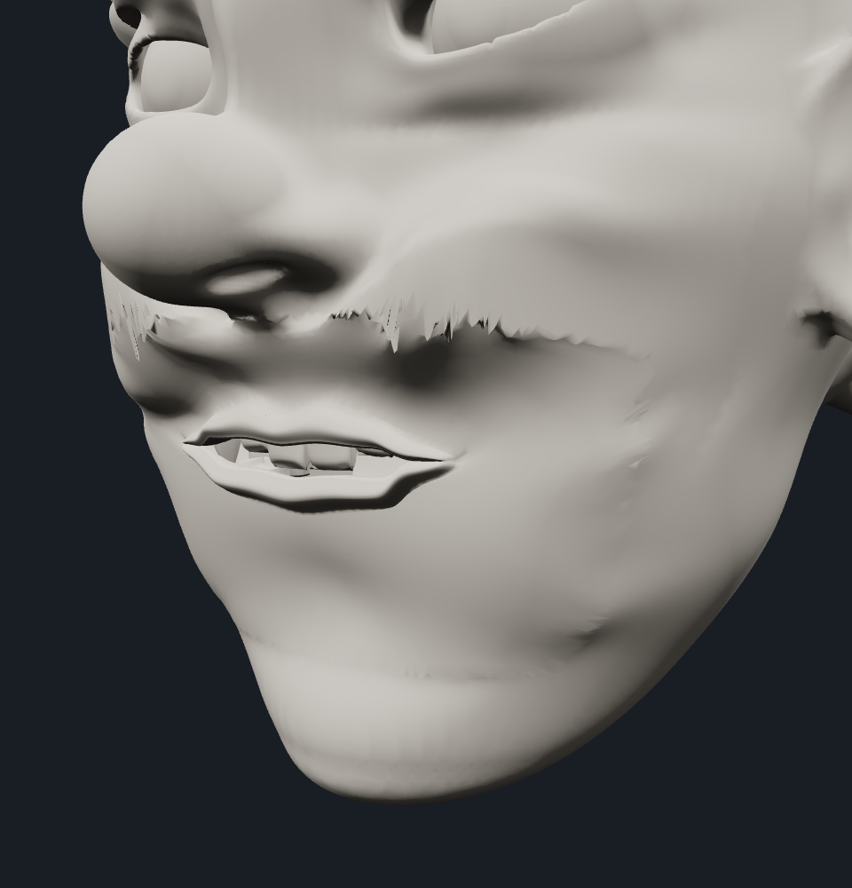
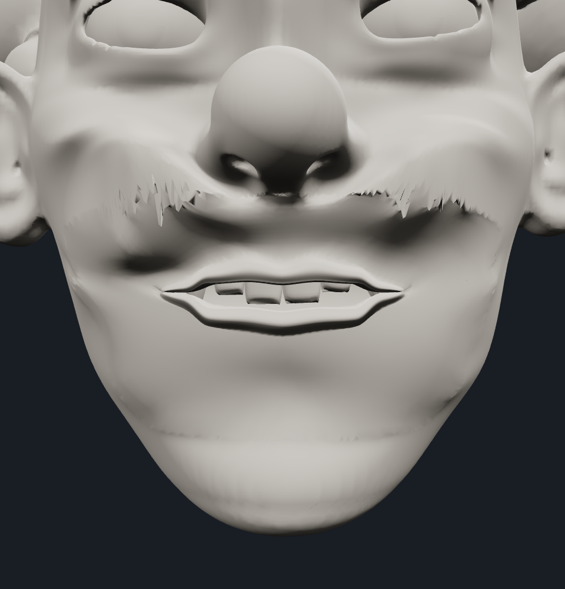
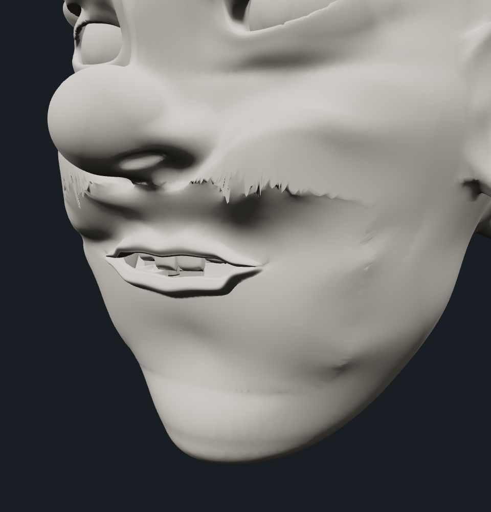
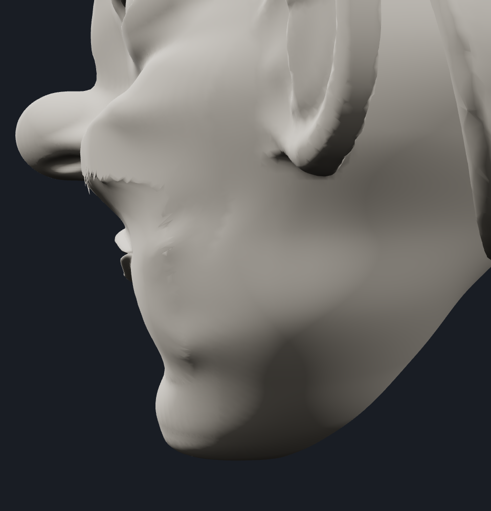
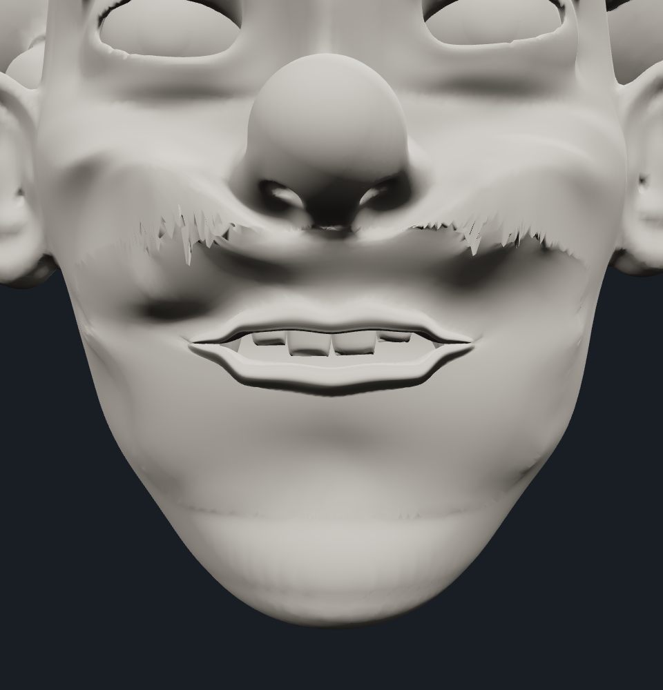
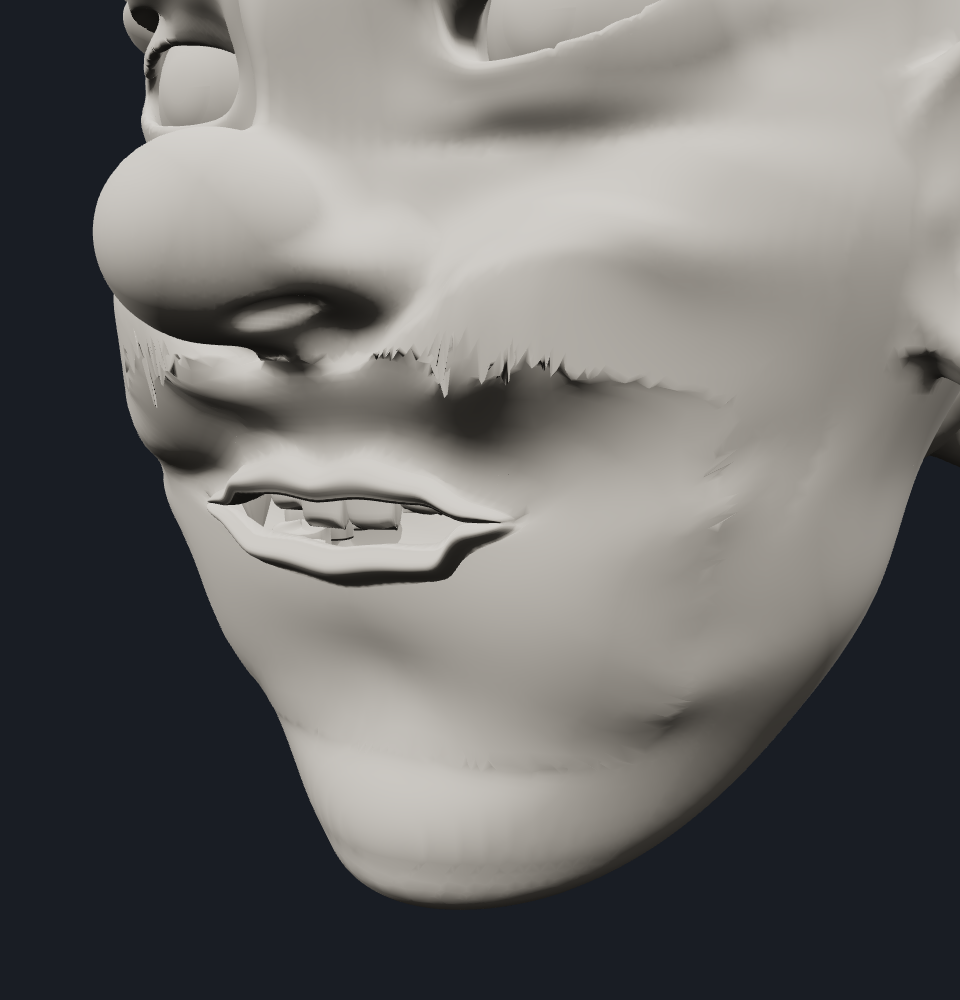
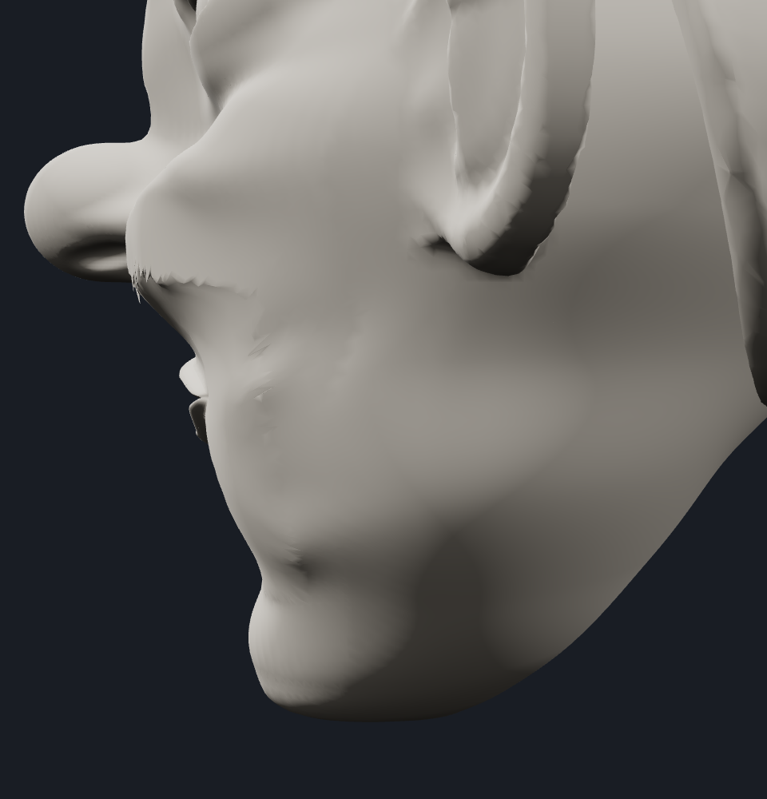

The approved 25% state is committed and tagged at 4932b4f (checkpoint/hidden-cage-mouth-25), backed up on GitHub without merging or deploying.
All nine requested views were inspected. Lip volume, curved aperture, progressive tooth framing, clean commissures and coherent chin/cheeks remain. No new visible clipping, flat vestibule wall, lower-lip bulk or shelf regression was identified. Existing Local-17 sculpt roughness is unchanged.
Highest visually clean tested sample: 40%. Above 40% is untested; these discrete samples do not measure an exact failure threshold or certify all internal intersections.
The deformation implementation and cage map are byte-identical to the approved 25% checkpoint. Rest position/normal/index hashes match before and after every pose. No Angry/Surprised presets, production merge, full suites or Pages deployment.
The approved 40% range is separately preserved at f6f7a88 (checkpoint/hidden-cage-mouth-40). The first integration step exposes setExpression({jaw}) / setJawOpening() through the existing controller, clamped to 0–40%. Geometry, normals and dental transforms match the direct driver exactly at all three samples; reset is exact. No Angry/Surprised presets were added. Controller equivalence record.
Interactive range review · Approved 25% checkpoint · Rest checks · Range record






